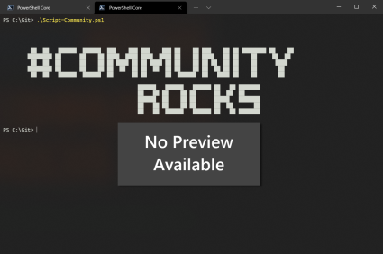

Apply site theme
Summary
Apply a theme to a specific SharePoint site without adding a tenant theme that would be available for all sites through the "Change the look" menu. This sample is available in both PnP PowerShell and CLI for Microsoft 365.
Example of applying a custom theme to a SharePoint site using CLI for Microsoft 365:

$siteUrl = "https://contoso.sharepoint.com/sites/DemoSite"
$themePalette = @{
"palette" = @{
"themePrimary"= "#1BF242";
"themeLighterAlt"= "#0d0b00";
"themeLighter"= "#0b35bc";
"themeLight"= "#322d00";
"themeTertiary"= "#6a5f00";
"themeSecondary"= "#1B22F2";
"themeDarkAlt"= "#ffe817";
"themeDark"= "#ffed4b";
"themeDarker"= "#fff171";
"neutralLighterAlt"= "#252525";
"neutralLighter"= "#282828";
"neutralLight"= "#313131";
"neutralQuaternaryAlt"= "#3f3f3f";
"neutralQuaternary"= "#484848";
"neutralTertiaryAlt"= "#4f4f4f";
"neutralTertiary"= "#c8c8c8";
"neutralSecondaryAlt"= "#d0d0d0";
"neutralSecondary"= "#dadada";
"neutralPrimary"= "#ffffff";
"neutralDark"= "#eaeaea";
"black"= "#f8f8f8";
"white"= "#1f1f1f";
"primaryBackground"= "#1f1f1f";
"primaryText"= "#ffffff";
"error"= "#ff5f5f"
}
}
Connect-PnPOnline -Url $siteUrl -ClientId "" -Interactive
$accessToken = Get-PnPAccessToken -ResourceTypeName SharePoint
$bodyObject = @{
name = "Sample theme"
themeJson = ($themePalette | ConvertTo-Json -Depth 10 -Compress)
}
$bodyJson = $bodyObject | ConvertTo-Json -Depth 10
$headers = @{
"Authorization" = "Bearer $accessToken"
"Accept" = "application/json;odata.metadata=minimal"
"Content-type" = "application/json; charset=utf-8"
"ODATA-VERSION" = "4.0"
}
$uri = "$siteUrl/_api/thememanager/Applytheme"
Invoke-RestMethod -Method POST -Uri $uri -Headers $headers -Body $bodyJson
Disconnect-PnPOnline
[CmdletBinding(SupportsShouldProcess = $true)]
param(
[Parameter(Mandatory, HelpMessage = "SharePoint site URL to apply the theme")]
[string]$SiteUrl,
[Parameter(Mandatory, HelpMessage = "Path to theme JSON file or inline JSON string")]
[string]$ThemeJson,
[Parameter(HelpMessage = "Unique name for the temporary theme")]
[string]$ThemeName = "TempTheme-$(Get-Date -Format 'yyyyMMddHHmmss')",
[Parameter(HelpMessage = "Keep the theme registered in tenant after applying")]
[switch]$KeepTheme
)
begin {
m365 login --ensure
if ($LASTEXITCODE -ne 0) {
throw "Failed to verify login status"
}
$themeContent = if ($ThemeJson.StartsWith('@')) {
$filePath = $ThemeJson.Substring(1)
if (-not (Test-Path $filePath)) {
throw "Theme file not found: $filePath"
}
Get-Content $filePath -Raw
} else {
$ThemeJson
}
}
process {
if (-not $PSCmdlet.ShouldProcess($SiteUrl, "Apply theme '$ThemeName'")) {
return
}
Write-Host "Registering theme '$ThemeName'..." -ForegroundColor Cyan
$setResult = m365 spo theme set --name $ThemeName --theme $themeContent 2>&1
if ($LASTEXITCODE -ne 0) {
throw "Failed to register theme: $setResult"
}
Write-Host "Applying theme to: $SiteUrl" -ForegroundColor Cyan
$applyResult = m365 spo theme apply --name $ThemeName --webUrl $SiteUrl --output json 2>&1
if ($LASTEXITCODE -ne 0) {
throw "Failed to apply theme: $applyResult"
}
Write-Host "Theme applied successfully!" -ForegroundColor Green
Write-Host "Catalog path: $applyResult" -ForegroundColor Gray
if (-not $KeepTheme) {
$removeResult = m365 spo theme remove --name $ThemeName --force 2>&1
if ($LASTEXITCODE -ne 0) {
Write-Warning "Failed to remove temporary theme. You may need to remove it manually."
}
} else {
Write-Host "Theme kept in tenant gallery" -ForegroundColor Yellow
}
}
# Example 1: Apply theme from JSON file
# .\Apply-SiteTheme.ps1 -SiteUrl "https://contoso.sharepoint.com/sites/ProjectX" -ThemeJson "@C:\themes\custom-theme.json"
# Example 2: Apply theme from inline JSON and keep it in tenant
# .\Apply-SiteTheme.ps1 -SiteUrl "https://contoso.sharepoint.com/sites/ProjectX" -ThemeJson '{"themePrimary":"#d81e05","themeLighterAlt":"#fdf5f4","themeLighter":"#f9d6d2","themeLight":"#f4b4ac","themeTertiary":"#e87060","themeSecondary":"#dd351e","themeDarkAlt":"#c31a04","themeDark":"#a51603","themeDarker":"#791002","neutralLighterAlt":"#eeeeee","neutralLighter":"#f5f5f5","neutralLight":"#e1e1e1","neutralQuaternaryAlt":"#d1d1d1","neutralQuaternary":"#c8c8c8","neutralTertiaryAlt":"#c0c0c0","neutralTertiary":"#c2c2c2","neutralSecondary":"#858585","neutralPrimaryAlt":"#4b4b4b","neutralPrimary":"#333333","neutralDark":"#272727","black":"#1d1d1d","white":"#f5f5f5"}' -KeepTheme
# Example 3: Test with WhatIf before applying
# .\Apply-SiteTheme.ps1 -SiteUrl "https://contoso.sharepoint.com/sites/ProjectX" -ThemeJson "@theme.json" -WhatIf
# Example 4: Apply with verbose output
# .\Apply-SiteTheme.ps1 -SiteUrl "https://contoso.sharepoint.com/sites/ProjectX" -ThemeJson "@theme.json" -Verbose
Contributors
Disclaimer
THESE SAMPLES ARE PROVIDED AS IS WITHOUT WARRANTY OF ANY KIND, EITHER EXPRESS OR IMPLIED, INCLUDING ANY IMPLIED WARRANTIES OF FITNESS FOR A PARTICULAR PURPOSE, MERCHANTABILITY, OR NON-INFRINGEMENT.